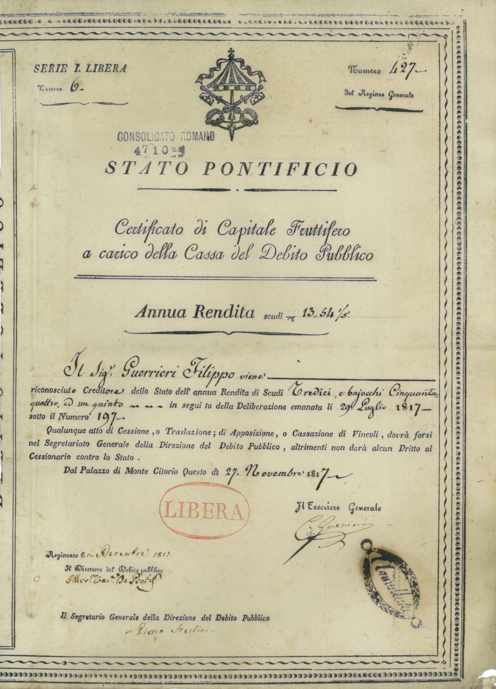

How government (national) debt works: deficits, bonds, and the debt-to-GDP ratio
A budget deficit is a single year's shortfall (spending exceeds revenue); national debt is the accumulated total of those deficits over the years. Governments borrow mainly by issuing bonds (government securities); debt is measured against gross domestic product (GDP). For reference: per the IMF, Uzbekistan's public debt was 32.6% of GDP at the end of 2024. A reference, facts only.

'National debt' and 'budget deficit' are two concepts that appear constantly in the news and in political debate — but are often confused. This reference explains, facts only, the difference between them, how governments borrow, why debt is measured against GDP, and when it becomes dangerous.
Deficit versus debt
A budget deficit is an annual flow: in a given fiscal year, if the government spends more than the revenue it collects, it runs a deficit. Debt is a stock — the accumulated total of all past deficits (minus any surpluses). The opposite of a deficit is a surplus: when revenue exceeds spending, the extra can be used to reduce debt. The key point: a deficit is 'this year's shortfall,' while debt is 'the running total' — and every deficit adds to the debt.
How governments borrow
Governments borrow mainly by issuing bonds — government securities. The U.S. Treasury, for example, issues short-term bills, medium-term notes, and long-term bonds; other countries sell their own sovereign bonds. These securities are bought by domestic and foreign investors, banks, pension funds, other governments, and their central banks. In return, the government commits to repay the principal and to pay interest in future.

Interest payments — a burden on the budget
Servicing the debt — paying interest — is a mandatory and large budget line. In the United States, for instance, net interest costs reached about $970 billion in fiscal year 2025, exceeding defense spending and becoming the third-largest budget item (after Social Security and Medicare). The larger the debt and the higher interest rates are, the more money goes to interest and the less remains for other areas.
The debt-to-GDP ratio
In assessing debt, its ratio to gross domestic product (GDP) matters more than the raw amount. This ratio compares the debt to the size of the country's annual economy, because a large economy can carry more debt than a small one. That is why this measure is used to compare countries and periods.
What the numbers look like worldwide
According to the International Monetary Fund (IMF), in 2025 world public debt was equal to about 93% of global GDP. In advanced economies the figure averages around 110%. In the United States, federal debt held by the public is about 99% of GDP, while gross debt exceeds 120% (fiscal year 2025). Japan is the highest example: its government debt exceeds 200% of GDP.
Where Uzbekistan stands
According to the IMF's 2025 Article IV consultation, Uzbekistan's public and publicly guaranteed debt was 32.6% of GDP (about $36.8 billion) at the end of 2024. That has risen from a very low level in 2018 (around 17% of GDP), but remains moderate and well below the statutory ceiling of 60%. The IMF assesses the risk of debt distress in Uzbekistan as 'low,' and most of the debt is external — that is, in foreign currency.
The dangers if debt gets too high
If debt grows too much, several risks appear: interest costs rise and leave little for other needs; heavy government borrowing can push up rates and crowd out private investment; and because debt must be refinanced continually, if investors lose confidence the cost of borrowing spikes (and in the worst case a default can occur). Rating agencies (Moody's, S&P, Fitch) grade sovereign debt; a downgrade makes borrowing more expensive.
Foreign-currency debt — a special risk
For developing countries, debt taken on in a foreign currency (dollars or euros) is especially risky. Such debt cannot be 'inflated away' by printing one's own money, and if the national currency weakens it becomes even more expensive. Because a large share of Uzbekistan's external debt is precisely in foreign currency, sharp swings in the som exchange rate directly affect the debt burden.
Why this matters for the diaspora and compatriots
Government debt is a subject that touches every citizen directly — through taxes, infrastructure, social spending, and the stability of the national currency. Knowing the difference between deficit and debt, the mechanics of bonds, and the ratio to GDP helps in correctly understanding 'billion-dollar debt' headlines in the news. This reference gives general knowledge, not financial advice.

Sources
- IMF — Uzbekistan 2025 Article IV Consultation (PPG debt 32.6% of GDP at end-2024; low risk of debt distress)
- IMF Blog — Global debt remains above 235% of world GDP (public debt ~93% of GDP, advanced economies ~110%), Sept 2025
- U.S. Treasury — FY2025 Financial Report, Results in Brief (deficit ~$1.8T; debt held by public ~99% of GDP)
- U.S. House Budget Committee / CBO — net interest cost (~$970bn FY2025) surpasses national defense
- Investopedia — National debt, deficits and bonds (definitions)